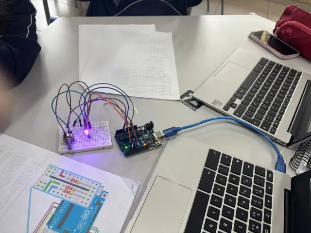
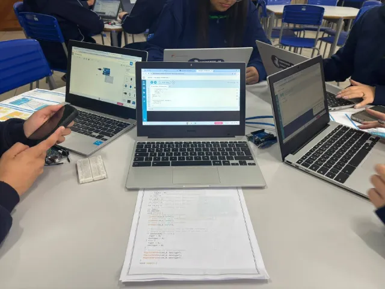

DIAGNÓSTICO
Sistemas automatizados e exames padronizados.
“Quando a luz não encontra um único ponto para formar uma imagem nítida.”
Entenda o problema com esquemas simples e descubra como ciência, programação e robótica podem ajudar.
Explorar o projeto ↓Astigmatismo é um erro refrativo: a curvatura da córnea ou do cristalino não é regular em todas as direções.
Por isso, a luz não converge em um único ponto na retina. Ele pode aparecer sozinho ou junto com miopia e hipermetropia.
Este controle cria uma representação educativa. Cada pessoa percebe o astigmatismo de forma diferente.
A robótica pode reduzir impactos em tarefas que exigem precisão e repetibilidade — do diagnóstico à fabricação personalizada de lentes.
Sistemas automatizados e exames padronizados.
Ajuste preciso de equipamentos em procedimentos.
Lentes produzidas com medições de alta precisão.
Apoio a pessoas com visão reduzida.
Topógrafos de córnea, equipamentos digitais de medição e sistemas eletrônicos de diagnóstico.
Posicionamento automatizado, medições integradas e fabricação controlada de lentes.
Robôs com visão computacional e produção ainda mais personalizada.
O projeto une o estudo do astigmatismo à prática da robótica. Registramos pesquisa, planejamento, desenvolvimento, montagem e testes de um protótipo para representar a distorção da luz.


Clique em um cartão ou use Enter/Espaço para virar e ver a resposta.